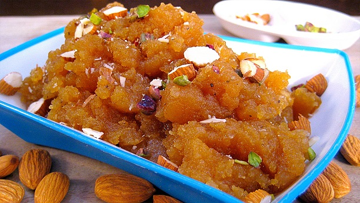

Besan(Gram flour) Halwa

Description
Halwais a type of confectionery originating from Persia and widely spread
throughout Middle east. The name is used for a broad variety of recipes, generally a thick paste made from
flour, butter, liquid oil, saffron, rosewater, milk, cocoa powder, and sweetened with sugar.
Ingredients
- 1 handful of crushed almonds
- 1 handful of dried raisins
- 1 handful of crushed cashews
- 1 handful of crushed pistachios
- 1 cup milk
- 1 cup water
- 1/2 teaspoon ground cardamom
- 1/2 cup ghee
- 2 cup chickpea flour (besan)
- 1 cup sugar
Process
- Step 1:
Bring the milk and water to a simmer in a saucepan over medium-low heat;
stir the cardamom into the mixture. Set aside.
- Step 2:
Melt the ghee in a shallow skillet over medium heat;
stir the chickpea flour into the melted ghee and cook until fragrant, about 10 minutes.
Add the sugar and stir to incorporate.
Add the dry fruits
Slowly pour the milk mixture into the skillet while stirring to avoid lumps. Continue cooking and stirring until the halwa pulls away from the sides of the pan, 10 to 15 minutes.
Serve hot or spread the mixture into a rimmed plate and allow to cool.
Cut into squares and serve.